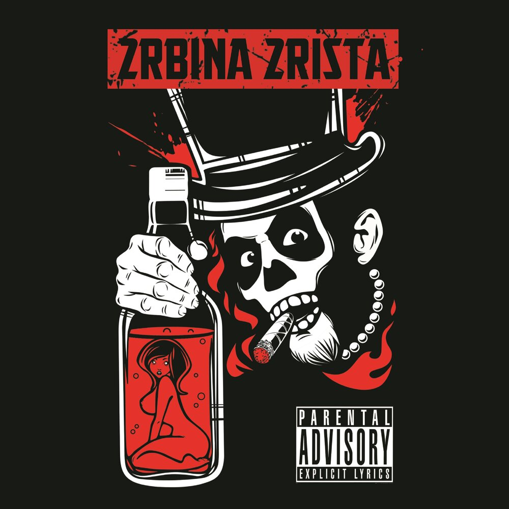

2rbina 2rista
Хаос ради творчества

2rbina 2rista. Странный, невообразимый, радиоактивный и даже безумный стиль исполнения, текста и посылы привлекли множество слушателей, которые хотели разукрасить свои унылые будни. Но что именно так цепляет в их исполнении?
Своё начало группа ведёт из атомной столицы урала, города Озёрска. В начале это был обычный хип-хоп, примером является трек "Рутина". Но совсем скоро они поменяли своё направление на смесь хим-хопа, дабстепа, рока и лютой электронщины. Даже Максим Шишов (Мака Ди) считал трек унылым. "Почему не угодила?))) Как и написано, я считаю ее "немного унылой". Это ж не значит, что я ее считаю говнищем!))Хорошая песенка! Но.. немного унылая))))))".
Группа несколько лет выступает с концертами, собирая сплоченную группу энергичных и безбашенных ребят. На их выступлениях всегда присутствует безумная энергия, которая заряжает всех вокруг, присутствует и в песнях.
Но не только безумием едины. Если неподготовленному слушателю дать наушники, в которых играет Турбина, то он не поймёт, для чего такое делать и слушать. Всё дело в том, что ребята настоящие творцы. В своих песнях и клипах они вставляют разные отссылки и пасхалки для фанатов. Человеческая многоножка, Сволочи, Бабдук, зомбиленд. Эти фильмы уже бывали в песнях группы.
Так же сами ребята поднимают разные темы, как творческие, так и простые, но с изюминкой. Примером может послушить трек "Зомби", где ребята сравнивают людей с зомби, которые не любят лето, фрисби и тофу, с людьми, бегающими за своими низкими желаниями, заканчивая песню припевом, где последние строчками являются: "Чем больше узнаю людей, тем больше люблю зомби". В песне "Листики" нет скрытого посыла, лирический герой жалуется на то, что наступила осень. Но поток мысли автора настолько далеко ушёл в своих аналогиях, что осень в песне сравнивают с "Русским футболом в конце второго тайма" и с "Месячными, в масштабе государства".
Прочитав всё это, вы можете задаться вопросом: "А нельзя ли было своё творчество делать не таким токсичным и без мата." Нельзя. Как говорит сам автор в песне "Бруталити": "Слишком много доброты — причина перегруза. Грубость — это мой язык, а пошлость — моя муза. Хамство — вежливость рабов. Я — самый мощный раб."